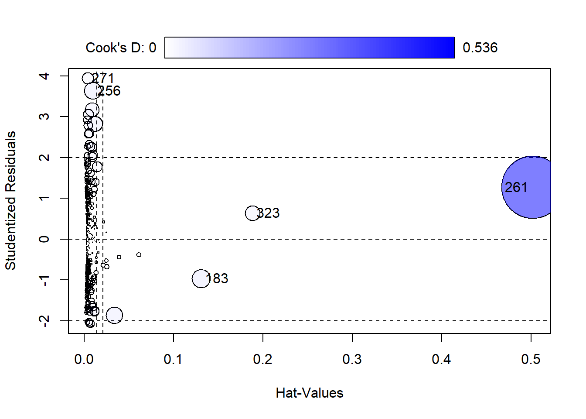
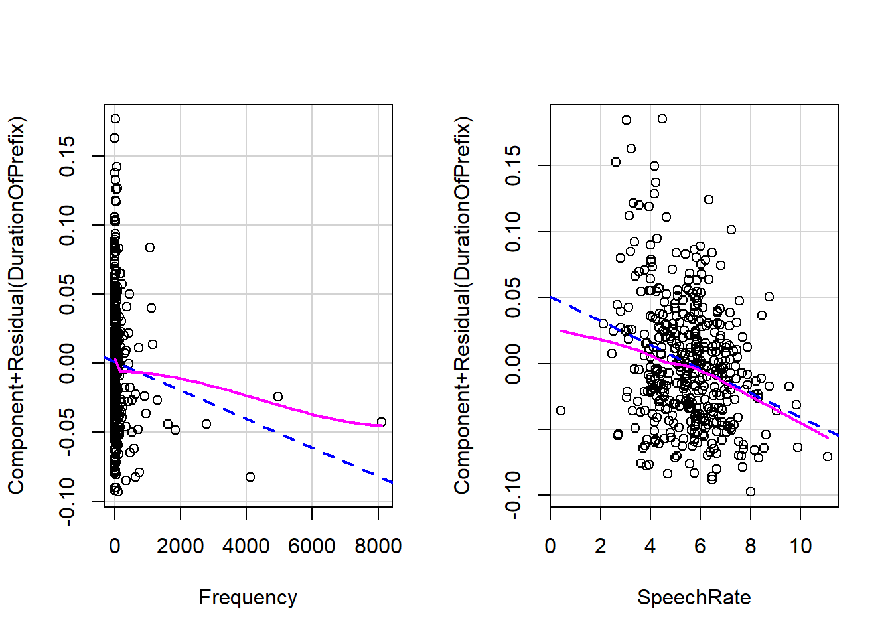
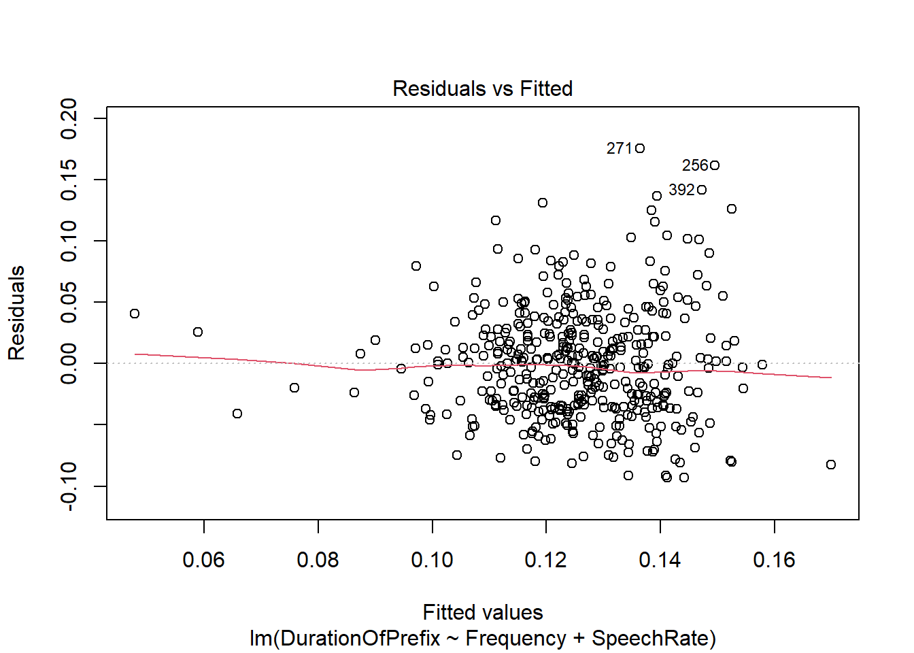
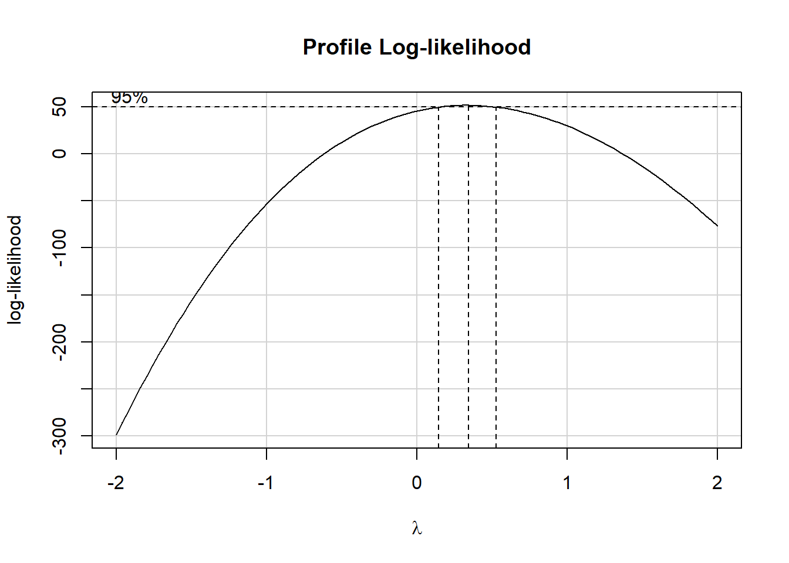
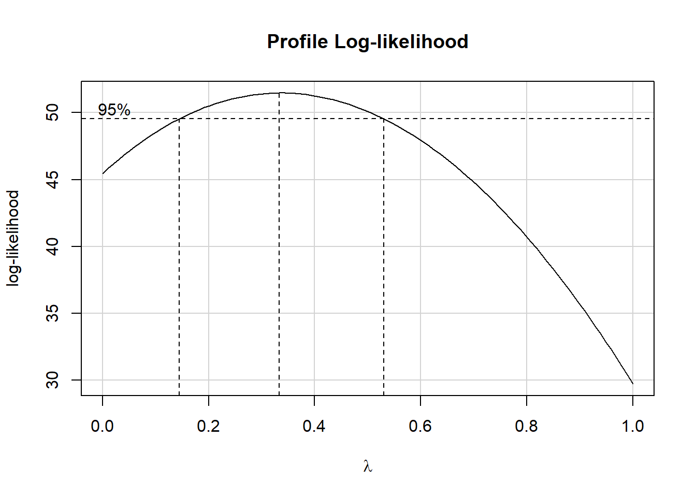
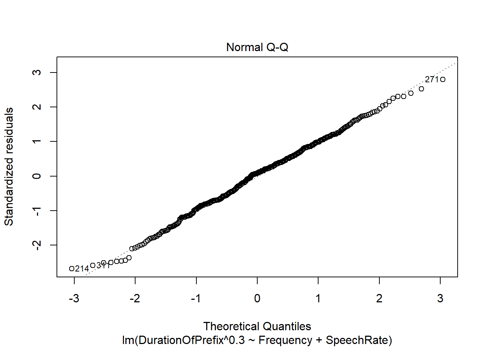
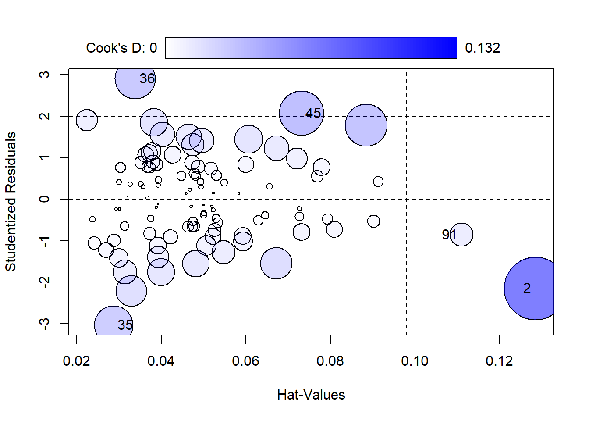
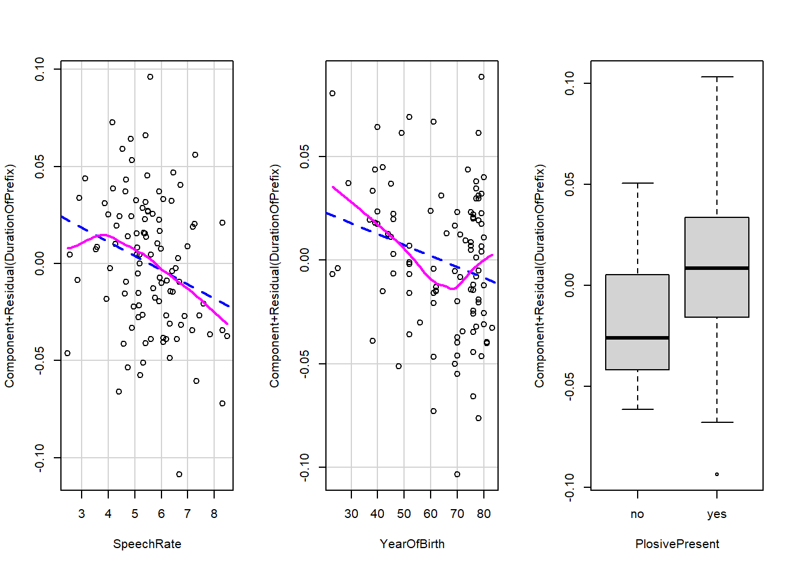
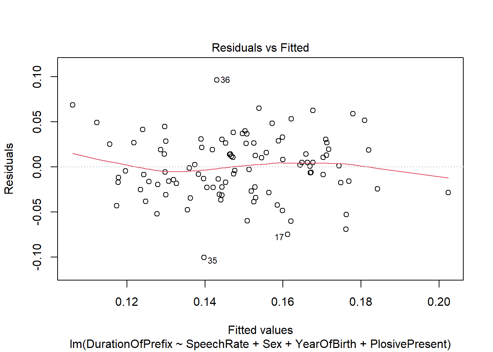
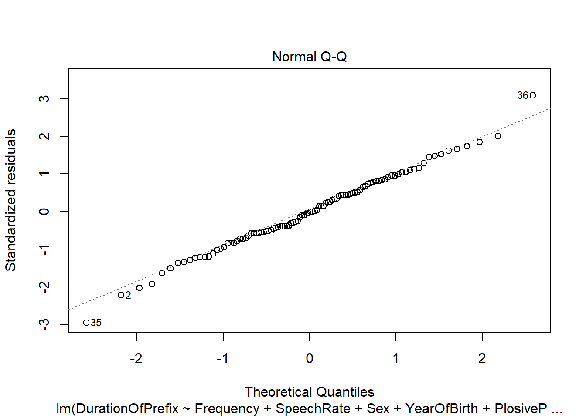

library(languageR)Warning: package 'languageR' was built under R version 4.2.3data("durationsGe")
data("durationsOnt")library(languageR)Warning: package 'languageR' was built under R version 4.2.3data("durationsGe")
data("durationsOnt")NA.summary(durationsGe) Word Frequency Speaker Sex YearOfBirth
geabonneerd : 1 Min. : 1.00 N01096 : 12 female:234 Min. :1923
geaccepteerd: 1 1st Qu.: 6.00 N01204 : 11 male :193 1st Qu.:1949
geacht : 1 Median : 18.00 N01031 : 9 NA's : 1 Median :1969
geactiveerd : 1 Mean : 125.35 N01133 : 8 Mean :1963
geadopteerd : 1 3rd Qu.: 59.25 N01159 : 8 3rd Qu.:1977
geadresseerd: 1 Max. :8104.00 (Other):379 Max. :1983
(Other) :422 NA's : 1 NA's :3
DurationOfPrefix SpeechRate NumberSegmentsOnset
Min. :0.02481 Min. : 0.4203 Min. :0.000
1st Qu.:0.09103 1st Qu.: 4.4718 1st Qu.:1.000
Median :0.11958 Median : 5.6089 Median :1.000
Mean :0.12525 Mean : 5.5392 Mean :1.341
3rd Qu.:0.15187 3rd Qu.: 6.4845 3rd Qu.:2.000
Max. :0.31180 Max. :11.0865 Max. :3.000
durationsGeNA<- na.exclude(durationsGe)
summary(durationsGeNA) Word Frequency Speaker Sex YearOfBirth
geabonneerd : 1 Min. : 1.0 N01096 : 12 female:234 Min. :1923
geaccepteerd: 1 1st Qu.: 6.0 N01204 : 11 male :191 1st Qu.:1949
geacht : 1 Median : 18.0 N01031 : 9 Median :1969
geactiveerd : 1 Mean : 126.2 N01133 : 8 Mean :1963
geadopteerd : 1 3rd Qu.: 60.0 N01159 : 8 3rd Qu.:1977
geadresseerd: 1 Max. :8104.0 N01005 : 7 Max. :1983
(Other) :419 (Other):370
DurationOfPrefix SpeechRate NumberSegmentsOnset
Min. :0.02481 Min. : 0.4203 Min. :0.000
1st Qu.:0.09107 1st Qu.: 4.4743 1st Qu.:1.000
Median :0.11964 Median : 5.5978 Median :1.000
Mean :0.12550 Mean : 5.5411 Mean :1.346
3rd Qu.:0.15201 3rd Qu.: 6.4846 3rd Qu.:2.000
Max. :0.31180 Max. :11.0865 Max. :3.000
mGe <- lm(DurationOfPrefix ~ Frequency + SpeechRate+ Sex + SpeechRate*Sex, data = durationsGeNA)
summary(mGe)
Call:
lm(formula = DurationOfPrefix ~ Frequency + SpeechRate + Sex +
SpeechRate * Sex, data = durationsGeNA)
Residuals:
Min 1Q Median 3Q Max
-0.094781 -0.032729 -0.000638 0.024772 0.177933
Coefficients:
Estimate Std. Error t value Pr(>|t|)
(Intercept) 1.729e-01 1.170e-02 14.776 < 2e-16 ***
Frequency -1.066e-05 4.027e-06 -2.647 0.00842 **
SpeechRate -8.676e-03 2.092e-03 -4.148 4.06e-05 ***
Sexmale 1.248e-02 1.817e-02 0.687 0.49262
SpeechRate:Sexmale -1.391e-03 3.159e-03 -0.440 0.65990
---
Signif. codes: 0 '***' 0.001 '**' 0.01 '*' 0.05 '.' 0.1 ' ' 1
Residual standard error: 0.04543 on 420 degrees of freedom
Multiple R-squared: 0.09315, Adjusted R-squared: 0.08451
F-statistic: 10.78 on 4 and 420 DF, p-value: 2.488e-08El parámetro es AIC (Akaike Information Criterion)
En el método forward direction se inicia con un modelo nulo (b0). El computador luego busca el predictor que mejor predice el valor de la variable dependiente y lo retiene en el modelo.
m0 <- lm(DurationOfPrefix ~ 1, data = durationsGeNA)
m.fw <- step(m0, direction = "forward", scope = ~ Frequency + SpeechRate+ Sex + SpeechRate*Sex)Start: AIC=-2589.34
DurationOfPrefix ~ 1
Df Sum of Sq RSS AIC
+ SpeechRate 1 0.072542 0.88328 -2620.9
+ Frequency 1 0.015776 0.94004 -2594.4
<none> 0.95582 -2589.3
+ Sex 1 0.000181 0.95564 -2587.4
Step: AIC=-2620.89
DurationOfPrefix ~ SpeechRate
Df Sum of Sq RSS AIC
+ Frequency 1 0.0137775 0.86950 -2625.6
<none> 0.88328 -2620.9
+ Sex 1 0.0016745 0.88160 -2619.7
Step: AIC=-2625.57
DurationOfPrefix ~ SpeechRate + Frequency
Df Sum of Sq RSS AIC
<none> 0.86950 -2625.6
+ Sex 1 0.0023113 0.86719 -2624.7m.fw
Call:
lm(formula = DurationOfPrefix ~ SpeechRate + Frequency, data = durationsGeNA)
Coefficients:
(Intercept) SpeechRate Frequency
1.774e-01 -9.121e-03 -1.039e-05 Con el método inverso (The backward method) se inicia con todos los predictores y, de acuerdo con el AIC, remueve los predictores que no contribuyen al modelo.
m.bw <- step(mGe, direction = "backward")Start: AIC=-2622.9
DurationOfPrefix ~ Frequency + SpeechRate + Sex + SpeechRate *
Sex
Df Sum of Sq RSS AIC
- SpeechRate:Sex 1 0.0004002 0.86719 -2624.7
<none> 0.86679 -2622.9
- Frequency 1 0.0144623 0.88125 -2617.9
Step: AIC=-2624.7
DurationOfPrefix ~ Frequency + SpeechRate + Sex
Df Sum of Sq RSS AIC
- Sex 1 0.002311 0.86950 -2625.6
<none> 0.86719 -2624.7
- Frequency 1 0.014414 0.88160 -2619.7
- SpeechRate 1 0.072397 0.93958 -2592.6
Step: AIC=-2625.57
DurationOfPrefix ~ Frequency + SpeechRate
Df Sum of Sq RSS AIC
<none> 0.86950 -2625.6
- Frequency 1 0.013778 0.88328 -2620.9
- SpeechRate 1 0.070544 0.94004 -2594.4m.bw
Call:
lm(formula = DurationOfPrefix ~ Frequency + SpeechRate, data = durationsGeNA)
Coefficients:
(Intercept) Frequency SpeechRate
1.774e-01 -1.039e-05 -9.121e-03 Con el método bidireccional inicia como el método hacia adelante (forward method), pero cada vez que añade un predictor, remueve los que son redundantes.
m.both <- step(mGe, scope = ~ Frequency + SpeechRate+ Sex + SpeechRate*Sex)Start: AIC=-2622.9
DurationOfPrefix ~ Frequency + SpeechRate + Sex + SpeechRate *
Sex
Df Sum of Sq RSS AIC
- SpeechRate:Sex 1 0.0004002 0.86719 -2624.7
<none> 0.86679 -2622.9
- Frequency 1 0.0144623 0.88125 -2617.9
Step: AIC=-2624.7
DurationOfPrefix ~ Frequency + SpeechRate + Sex
Df Sum of Sq RSS AIC
- Sex 1 0.002311 0.86950 -2625.6
<none> 0.86719 -2624.7
+ SpeechRate:Sex 1 0.000400 0.86679 -2622.9
- Frequency 1 0.014414 0.88160 -2619.7
- SpeechRate 1 0.072397 0.93958 -2592.6
Step: AIC=-2625.57
DurationOfPrefix ~ Frequency + SpeechRate
Df Sum of Sq RSS AIC
<none> 0.86950 -2625.6
+ Sex 1 0.002311 0.86719 -2624.7
- Frequency 1 0.013778 0.88328 -2620.9
- SpeechRate 1 0.070544 0.94004 -2594.4m.both
Call:
lm(formula = DurationOfPrefix ~ Frequency + SpeechRate, data = durationsGeNA)
Coefficients:
(Intercept) Frequency SpeechRate
1.774e-01 -1.039e-05 -9.121e-03 mGe2 <- lm(DurationOfPrefix ~ Frequency + SpeechRate, data = durationsGeNA)
summary(mGe2)
Call:
lm(formula = DurationOfPrefix ~ Frequency + SpeechRate, data = durationsGeNA)
Residuals:
Min 1Q Median 3Q Max
-0.093289 -0.033755 -0.001836 0.024928 0.175446
Coefficients:
Estimate Std. Error t value Pr(>|t|)
(Intercept) 1.774e-01 8.913e-03 19.898 < 2e-16 ***
Frequency -1.039e-05 4.016e-06 -2.586 0.01 *
SpeechRate -9.121e-03 1.559e-03 -5.851 9.8e-09 ***
---
Signif. codes: 0 '***' 0.001 '**' 0.01 '*' 0.05 '.' 0.1 ' ' 1
Residual standard error: 0.04539 on 422 degrees of freedom
Multiple R-squared: 0.09031, Adjusted R-squared: 0.086
F-statistic: 20.95 on 2 and 422 DF, p-value: 2.121e-09library(car)Loading required package: carDataEl argumento id.method = "identify" de la función influencePlot () permite elegir interactivamente los valores atípicos:
En la ordenada Studentized residuals*: muestran la discrepancia entre los valores ajustados y los valores observados: identificar los casos por encima de 2 y por debajo de -2.
Hat value: la influencia de un dato sobre los valores ajustados (lénas verticales).
Cook’s distance: el tamaño de las burbujas indica las consecuencias de remover de una caso sobre los coeficientes y los valores ajustados.
influencePlot(mGe2, id.method = "identify")Warning in plot.window(...): "id.method" is not a graphical parameterWarning in plot.xy(xy, type, ...): "id.method" is not a graphical parameterWarning in axis(side = side, at = at, labels = labels, ...): "id.method" is not
a graphical parameter
Warning in axis(side = side, at = at, labels = labels, ...): "id.method" is not
a graphical parameterWarning in box(...): "id.method" is not a graphical parameterWarning in title(...): "id.method" is not a graphical parameterWarning in plot.xy(xy.coords(x, y), type = type, ...): "id.method" is not a
graphical parameter
StudRes Hat CookD
183 -0.9687157 0.130506303 0.04695695
256 3.6304414 0.009756288 0.04207098
261 1.2637538 0.501884019 0.53562708
271 3.9384617 0.003762546 0.01887851
323 0.6333545 0.188217533 0.03104628durationsGeNA[c(256, 261,271,323),] Word Frequency Speaker Sex YearOfBirth DurationOfPrefix SpeechRate
259 gespoeld 9 N01115 female 1977 0.154512 6.067292
264 gestapeld 6 N01005 female 1944 0.050903 3.630705
274 gebeld 1155 N01110 female 1977 0.144874 4.909180
326 geprijsd 5 N01141 female 1943 0.158563 5.941771
NumberSegmentsOnset
259 2
264 2
274 1
326 2la duración es numérica
### D. La relación entre la variable dependiente y la variable indenpendiente es lineal
La función crPlot() permite verificar la linealidad
par(mfrow = c(1, 2))
crPlot(mGe2, var = "Frequency")
crPlot(mGe2, var = "SpeechRate")
par(mfrow = c(1, 1))### E. Ausencia de heterocedasticidad
plot(mGe2, which = 1)
La función ncvTest(m) permite aplicar la prueba constant variance, cuya hipótesis nula es que los residuos tienen una varianza constante (homocedasticidad).
ncvTest(mGe2)Non-constant Variance Score Test
Variance formula: ~ fitted.values
Chisquare = 24.92641, Df = 1, p = 5.9561e-07boxCox(mGe2)
boxCox(mGe2, lambda = seq(0,1, 1/10))
m.trans<- lm(DurationOfPrefix^0.3 ~ Frequency + SpeechRate, data = durationsGeNA)
ncvTest(m.trans)Non-constant Variance Score Test
Variance formula: ~ fitted.values
Chisquare = 2.871763, Df = 1, p = 0.090146Con la transformación queda solucionado el problema de la heterocedasticidad
### F. Debe haber ausencia de multicolinealidad.
La multicolinealidad se presenta cuando hay una fuerte correlación entre dos variables independientes y descarta el efectos de factores subyacentes. la función vif() permite detectarla (VIF no debe superar el valor de 10).
car::vif(m.trans) Frequency SpeechRate
1.000946 1.000946 durbinWatsonTest(m.trans) lag Autocorrelation D-W Statistic p-value
1 -0.02108955 2.034179 0.73
Alternative hypothesis: rho != 0No hay autocorrelación
### H. Los residuos deben tener una distribución normal
shapiro.test(residuals(m.trans))
Shapiro-Wilk normality test
data: residuals(m.trans)
W = 0.99611, p-value = 0.3848plot(m.trans, which=2)
NA.library(languageR)
data("durationsOnt")
summary(durationsOnt) Word Frequency Speaker Sex YearOfBirth
ontbeten : 1 Min. :0.000 N01014 : 4 female:49 Min. :23.00
ontbijt : 1 1st Qu.:1.609 N01068 : 4 male :53 1st Qu.:52.00
ontbijtbuffet : 1 Median :2.562 N01085 : 4 Median :70.00
ontbijten : 1 Mean :2.660 N01157 : 4 Mean :64.21
ontbijtje : 1 3rd Qu.:3.859 N01019 : 3 3rd Qu.:77.00
ontbijtservies: 1 Max. :6.725 N01020 : 3 Max. :83.00
(Other) :96 (Other):80
DurationOfPrefix DurationPrefixVowel DurationPrefixNasal DurationPrefixPlosive
Min. :0.0393 Min. :0.01648 Min. :0.00000 Min. :0.00000
1st Qu.:0.1167 1st Qu.:0.04577 1st Qu.:0.03693 1st Qu.:0.00000
Median :0.1581 Median :0.06357 Median :0.04985 Median :0.03866
Mean :0.1488 Mean :0.06268 Mean :0.04982 Mean :0.03633
3rd Qu.:0.1743 3rd Qu.:0.07736 3rd Qu.:0.06403 3rd Qu.:0.05559
Max. :0.2392 Max. :0.12322 Max. :0.09738 Max. :0.11473
NumberOfSegmentsOnset PlosivePresent SpeechRate
Min. :1.000 no :28 Min. :2.460
1st Qu.:1.000 yes:74 1st Qu.:4.846
Median :1.000 Median :5.451
Mean :1.304 Mean :5.555
3rd Qu.:2.000 3rd Qu.:6.339
Max. :2.000 Max. :8.479
mOnt <- lm(DurationOfPrefix ~ Frequency + SpeechRate+ Sex + YearOfBirth+ PlosivePresent+ Frequency*PlosivePresent, data = durationsOnt)
summary(mOnt)
Call:
lm(formula = DurationOfPrefix ~ Frequency + SpeechRate + Sex +
YearOfBirth + PlosivePresent + Frequency * PlosivePresent,
data = durationsOnt)
Residuals:
Min 1Q Median 3Q Max
-0.10224 -0.01983 -0.00059 0.02439 0.10372
Coefficients:
Estimate Std. Error t value Pr(>|t|)
(Intercept) 0.2054727 0.0220145 9.334 4.39e-15 ***
Frequency 0.0015387 0.0038109 0.404 0.6873
SpeechRate -0.0076452 0.0030201 -2.531 0.0130 *
Sexmale -0.0101445 0.0070684 -1.435 0.1545
YearOfBirth -0.0004851 0.0002403 -2.019 0.0463 *
PlosivePresentyes 0.0361461 0.0148533 2.434 0.0168 *
Frequency:PlosivePresentyes -0.0040897 0.0046615 -0.877 0.3825
---
Signif. codes: 0 '***' 0.001 '**' 0.01 '*' 0.05 '.' 0.1 ' ' 1
Residual standard error: 0.03515 on 95 degrees of freedom
Multiple R-squared: 0.2366, Adjusted R-squared: 0.1883
F-statistic: 4.906 on 6 and 95 DF, p-value: 0.0002072mOnt
Call:
lm(formula = DurationOfPrefix ~ Frequency + SpeechRate + Sex +
YearOfBirth + PlosivePresent + Frequency * PlosivePresent,
data = durationsOnt)
Coefficients:
(Intercept) Frequency
0.2054727 0.0015387
SpeechRate Sexmale
-0.0076452 -0.0101445
YearOfBirth PlosivePresentyes
-0.0004851 0.0361461
Frequency:PlosivePresentyes
-0.0040897 El parámetro es AIC (Akaike Information Criterion)
En el método forward direction se inicia con un modelo nulo (b0). El computador luego busca el predictor que mejor predice el valor de la variable dependiente y lo retiene en el modelo.
m02 <- lm(DurationOfPrefix ~ 1, data = durationsOnt)
m.fw2 <- step(m02, direction = "forward", scope = ~ Frequency + SpeechRate+ Sex + YearOfBirth+ PlosivePresent+ Frequency*PlosivePresent)Start: AIC=-660.74
DurationOfPrefix ~ 1
Df Sum of Sq RSS AIC
+ YearOfBirth 1 0.0173281 0.13642 -670.94
+ PlosivePresent 1 0.0124341 0.14131 -667.34
+ SpeechRate 1 0.0099765 0.14377 -665.58
<none> 0.15374 -660.74
+ Sex 1 0.0021996 0.15154 -660.21
+ Frequency 1 0.0003733 0.15337 -658.99
Step: AIC=-670.94
DurationOfPrefix ~ YearOfBirth
Df Sum of Sq RSS AIC
+ PlosivePresent 1 0.0078460 0.12857 -674.98
+ SpeechRate 1 0.0044463 0.13197 -672.32
<none> 0.13642 -670.94
+ Sex 1 0.0017228 0.13469 -670.23
+ Frequency 1 0.0001268 0.13629 -669.03
Step: AIC=-674.98
DurationOfPrefix ~ YearOfBirth + PlosivePresent
Df Sum of Sq RSS AIC
+ SpeechRate 1 0.0074921 0.12108 -679.10
<none> 0.12857 -674.98
+ Sex 1 0.0023511 0.12622 -674.86
+ Frequency 1 0.0003234 0.12825 -673.24
Step: AIC=-679.1
DurationOfPrefix ~ YearOfBirth + PlosivePresent + SpeechRate
Df Sum of Sq RSS AIC
+ Sex 1 0.00238153 0.11870 -679.13
<none> 0.12108 -679.10
+ Frequency 1 0.00014483 0.12093 -677.22
Step: AIC=-679.13
DurationOfPrefix ~ YearOfBirth + PlosivePresent + SpeechRate +
Sex
Df Sum of Sq RSS AIC
<none> 0.11870 -679.13
+ Frequency 1 0.00037183 0.11832 -677.45m.fw2
Call:
lm(formula = DurationOfPrefix ~ YearOfBirth + PlosivePresent +
SpeechRate + Sex, data = durationsOnt)
Coefficients:
(Intercept) YearOfBirth PlosivePresentyes SpeechRate
0.2103870 -0.0005268 0.0249334 -0.0073414
Sexmale
-0.0097087 Con el método inverso (The backward method) se inicia con todos los predictores y, de acuerdo con el AIC, remueve los predictores que no contribuyen al modelo.
m.bw2 <- step(mOnt, direction = "backward")Start: AIC=-676.27
DurationOfPrefix ~ Frequency + SpeechRate + Sex + YearOfBirth +
PlosivePresent + Frequency * PlosivePresent
Df Sum of Sq RSS AIC
- Frequency:PlosivePresent 1 0.0009510 0.11832 -677.45
<none> 0.11737 -676.27
- Sex 1 0.0025449 0.11992 -676.08
- YearOfBirth 1 0.0050366 0.12241 -673.99
- SpeechRate 1 0.0079176 0.12529 -671.61
Step: AIC=-677.45
DurationOfPrefix ~ Frequency + SpeechRate + Sex + YearOfBirth +
PlosivePresent
Df Sum of Sq RSS AIC
- Frequency 1 0.0003718 0.11870 -679.13
<none> 0.11832 -677.45
- Sex 1 0.0026085 0.12093 -677.22
- YearOfBirth 1 0.0059261 0.12425 -674.46
- SpeechRate 1 0.0072570 0.12558 -673.38
- PlosivePresent 1 0.0118560 0.13018 -669.71
Step: AIC=-679.13
DurationOfPrefix ~ SpeechRate + Sex + YearOfBirth + PlosivePresent
Df Sum of Sq RSS AIC
<none> 0.11870 -679.13
- Sex 1 0.0023815 0.12108 -679.10
- YearOfBirth 1 0.0061209 0.12482 -676.00
- SpeechRate 1 0.0075224 0.12622 -674.86
- PlosivePresent 1 0.0116172 0.13031 -671.60m.bw2
Call:
lm(formula = DurationOfPrefix ~ SpeechRate + Sex + YearOfBirth +
PlosivePresent, data = durationsOnt)
Coefficients:
(Intercept) SpeechRate Sexmale YearOfBirth
0.2103870 -0.0073414 -0.0097087 -0.0005268
PlosivePresentyes
0.0249334 Con el método bidireccional inicia como el método hacia adelante (forward method), pero cada vez que añade un predictor, remueve los que son redundantes.
m.both2 <- step(mOnt, scope = ~ Frequency + SpeechRate+ Sex + YearOfBirth+ PlosivePresent+ Frequency*PlosivePresent)Start: AIC=-676.27
DurationOfPrefix ~ Frequency + SpeechRate + Sex + YearOfBirth +
PlosivePresent + Frequency * PlosivePresent
Df Sum of Sq RSS AIC
- Frequency:PlosivePresent 1 0.0009510 0.11832 -677.45
<none> 0.11737 -676.27
- Sex 1 0.0025449 0.11992 -676.08
- YearOfBirth 1 0.0050366 0.12241 -673.99
- SpeechRate 1 0.0079176 0.12529 -671.61
Step: AIC=-677.45
DurationOfPrefix ~ Frequency + SpeechRate + Sex + YearOfBirth +
PlosivePresent
Df Sum of Sq RSS AIC
- Frequency 1 0.0003718 0.11870 -679.13
<none> 0.11832 -677.45
- Sex 1 0.0026085 0.12093 -677.22
+ Frequency:PlosivePresent 1 0.0009510 0.11737 -676.27
- YearOfBirth 1 0.0059261 0.12425 -674.46
- SpeechRate 1 0.0072570 0.12558 -673.38
- PlosivePresent 1 0.0118560 0.13018 -669.71
Step: AIC=-679.13
DurationOfPrefix ~ SpeechRate + Sex + YearOfBirth + PlosivePresent
Df Sum of Sq RSS AIC
<none> 0.11870 -679.13
- Sex 1 0.0023815 0.12108 -679.10
+ Frequency 1 0.0003718 0.11832 -677.45
- YearOfBirth 1 0.0061209 0.12482 -676.00
- SpeechRate 1 0.0075224 0.12622 -674.86
- PlosivePresent 1 0.0116172 0.13031 -671.60m.both2
Call:
lm(formula = DurationOfPrefix ~ SpeechRate + Sex + YearOfBirth +
PlosivePresent, data = durationsOnt)
Coefficients:
(Intercept) SpeechRate Sexmale YearOfBirth
0.2103870 -0.0073414 -0.0097087 -0.0005268
PlosivePresentyes
0.0249334 mOnt2 <- lm(DurationOfPrefix ~ SpeechRate+ Sex + YearOfBirth+ PlosivePresent, data = durationsOnt)
summary(mOnt2)
Call:
lm(formula = DurationOfPrefix ~ SpeechRate + Sex + YearOfBirth +
PlosivePresent, data = durationsOnt)
Residuals:
Min 1Q Median 3Q Max
-0.100445 -0.022487 -0.000233 0.025945 0.096190
Coefficients:
Estimate Std. Error t value Pr(>|t|)
(Intercept) 0.2103870 0.0200264 10.505 < 2e-16 ***
SpeechRate -0.0073414 0.0029609 -2.479 0.01489 *
Sexmale -0.0097087 0.0069593 -1.395 0.16618
YearOfBirth -0.0005268 0.0002355 -2.237 0.02761 *
PlosivePresentyes 0.0249334 0.0080921 3.081 0.00268 **
---
Signif. codes: 0 '***' 0.001 '**' 0.01 '*' 0.05 '.' 0.1 ' ' 1
Residual standard error: 0.03498 on 97 degrees of freedom
Multiple R-squared: 0.228, Adjusted R-squared: 0.1961
F-statistic: 7.16 on 4 and 97 DF, p-value: 4.282e-05El argumento id.method = "identify" de la función influencePlot () permite elegir interactivamente los valores atípicos:
En la ordenada Studentized residuals*: muestran la discrepancia entre los valores ajustados y los valores observados: identificar los casos por encima de 2 y por debajo de -2.
Hat value: la influencia de un dato sobre los valores ajustados (lénas verticales).
Cook’s distance: el tamaño de las burbujas indica las consecuencias de remover de una caso sobre los coeficientes y los valores ajustados.
influencePlot(mOnt2, id.method = "identify")Warning in plot.window(...): "id.method" is not a graphical parameterWarning in plot.xy(xy, type, ...): "id.method" is not a graphical parameterWarning in axis(side = side, at = at, labels = labels, ...): "id.method" is not
a graphical parameter
Warning in axis(side = side, at = at, labels = labels, ...): "id.method" is not
a graphical parameterWarning in box(...): "id.method" is not a graphical parameterWarning in title(...): "id.method" is not a graphical parameterWarning in plot.xy(xy.coords(x, y), type = type, ...): "id.method" is not a
graphical parameter
StudRes Hat CookD
45 2.0716772 0.07313941 0.06551147
35 -3.0342242 0.02867267 0.05011376
2 -2.1529319 0.12846574 0.13170905
91 -0.8579944 0.11099466 0.01843230
36 2.9025569 0.03379372 0.05474261durationsOnt[c(85,36,71,66,2), ] Word Frequency Speaker Sex YearOfBirth DurationOfPrefix
49 ontwijken 2.639057 N01089 female 75 0.187598
31 ontmoet 5.087596 N01212 female 83 0.119349
7 ontvangst 3.951244 N01062 male 48 0.102165
102 ontstekingsvocht 0.000000 N01037 female 81 0.099240
58 ontbijt 4.844187 N01041 female 80 0.100478
DurationPrefixVowel DurationPrefixNasal DurationPrefixPlosive
49 0.089345 0.041068 0.057185
31 0.037293 0.028064 0.053992
7 0.033733 0.042036 0.026396
102 0.036075 0.063166 0.000000
58 0.035380 0.065099 0.000000
NumberOfSegmentsOnset PlosivePresent SpeechRate
49 1 yes 5.038937
31 1 yes 6.736842
7 1 yes 5.215124
102 2 no 5.138340
58 1 no 6.884682¿Los tiempos de reacción son numéricos?
### D. La relación entre la variable dependiente y la variable indenpendiente es lineal
La función crPlot() permite verificar la linealidad
par(mfrow = c(1, 3))
crPlot(mOnt2, var = "SpeechRate")
crPlot(mOnt2, var = "YearOfBirth")
crPlot(mOnt2, var = "PlosivePresent")
par(mfrow = c(1, 1))plot(mOnt2, which = 1)
La función ncvTest(m) permite aplicar la prueba constant variance, cuya hipótesis nula es que los residuos tienen una varianza constante (homocedasticidad).
ncvTest(mOnt)Non-constant Variance Score Test
Variance formula: ~ fitted.values
Chisquare = 0.06935309, Df = 1, p = 0.79228No hay problema con la homocedasticidad
durbinWatsonTest(mOnt) lag Autocorrelation D-W Statistic p-value
1 0.04643942 1.898347 0.552
Alternative hypothesis: rho != 0No hay autocorrelación
### H. Los residuos deben tener una distribución normal
shapiro.test(residuals(mOnt))
Shapiro-Wilk normality test
data: residuals(mOnt)
W = 0.99395, p-value = 0.9338plot(mOnt, which=2)